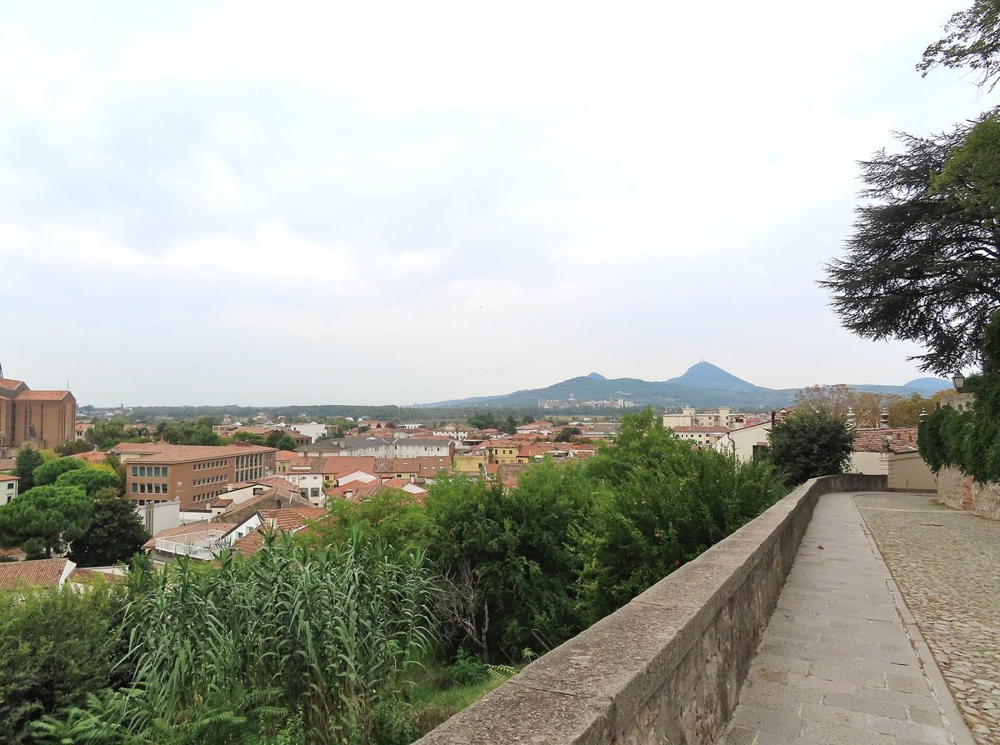

이탈리아 몬셀리체시, 재생에너지공동체에 '생산자 조합원'으로 가입…공공건물 지붕 태양광 이익을 에너지빈곤 가구 요금 지원에

시의회 승인 거쳐 공동체 '몬테그로토 테르메 1' 참여, 앞으로 지을 시 건물 태양광 전기 내놓기로…쓰임새는 지역위원회가 함께 정하고, 재단 지원 3만 유로로 연내 설계·주민 안내
이탈리아 베네토주 파도바도의 몬셀리체시가 재생에너지공동체(CER) '몬테그로토 테르메 1(Montegrotto Terme 1)'에 생산자 조합원으로 가입해, 앞으로 시 공공건물 지붕에 놓을 태양광 설비의 전기를 공동체에 내놓기로 했다. 시의회 승인을 거친 이번 가입에 따라 공동체 안에서 전기를 나눠 생기는 경제적 이익은 에너지빈곤 가구의 전기요금 지원과 공공임대주택의 에너지 효율 개선 등 사회사업에 쓰이며, 쓰임새를 정할 때는 지역위원회가 참여해 주민을 끌어들인다. 이탈리아 제도에서는 같은 시간대·같은 전력망 구역 안에서 생산과 소비가 겹치는 만큼 국가가 공동체에 20년 동안 인센티브를 주고, 이 공동체는 비영리 협회여서 가정과 소기업이 돈을 내지 않고 가입할 수 있으며 전기 공급사를 바꿀 필요도 없다. 시는 사업 착수와 주민 안내, 공공건물 설비 설계에 쓸 3만 유로를 파도바·로비고 저축은행 재단(Fondazione Cariparo)에서 받았으며, 이 활동은 올해 안에 마쳐야 한다. 크리스티안 베르가민(Christianne Bergamin) 시 환경 담당 시정위원은 단순하고 참여하는 모델을 골랐고 목적은 온전히 연대에 있다며, 이 방식이 CER을 "진정한 에너지 복지 공공정책"으로 바꿀 수 있다고 말했다. 그는 시민과 기업에 소비자로만이라도 가입해 달라고 당부했고, 시는 몇 주 안에 참여 방법을 알리는 주민 설명회를 열 계획이다.
시민에너지 관점
몬셀리체는 공공건물 지붕을 외부 사업자에게 빌려주고 임대료를 받는 대신 주민 공동체의 생산자로 들어가, 그 이익을 에너지빈곤 가구와 공공임대주택에 돌리는 길을 골랐다. EU가 2018년 재생에너지지침에서 재생에너지공동체를 제도 안에 들인 뒤 회원국들이 지원 장치를 만들어 왔고, 20년 인센티브와 무료 가입은 그 문을 주민 쪽으로 넓힌 사례로 보인다. 설비 규모도 정해지지 않은 단계에서 무엇이 달라지느냐는 물음이 나올 수 있지만, 이익이 얼마든 그 쓰임새를 지역위원회가 함께 정한다는 원칙을 설비보다 먼저 세웠다는 점이 핵심이다. 국내 지자체도 공공건물 지붕을 임대 입찰에 붙이기 전에 주민이 주인인 공동체 몫으로 먼저 내놓고, 그 이익을 에너지복지 재원으로 쓰는 조례부터 만들어야 한다.
출처: La Piazza 2026-11-01 Giada Zandonà 원문 보기
イタリア・モンセリチェ市、再生可能エネルギー共同体に「生産者組合員」として加入…公共建物の屋根の太陽光の利益をエネルギー貧困世帯の料金支援に
市議会の承認を経て共同体「モンテグロット・テルメ1」に参加、今後設ける市の建物の太陽光の電力を提供へ…使い道は地域委員会と共に決め、財団の支援3万ユーロで年内に設計・住民説明
イタリア北東部ヴェネト州パドヴァ県のモンセリチェ市が、再生可能エネルギー共同体（CER）「モンテグロット・テルメ1（Montegrotto Terme 1）」に生産者組合員として加入し、今後市の公共建物の屋根に設ける太陽光設備の電力を共同体に提供することになった。市議会の承認を経た今回の加入により、共同体の中で電力を分かち合って生まれる経済的利益は、エネルギー貧困世帯の電気料金支援や公営住宅の省エネ改修などの社会事業に充てられ、使い道を決める際には地域委員会が加わって住民を巻き込む。イタリアの制度では、同じ時間帯・同じ送配電網の区域で発電と消費が重なる分について国が共同体に20年間インセンティブを支払い、この共同体は非営利の協会であるため、家庭や小規模事業者は費用を払わずに加入でき、電力会社を切り替える必要もない。市は事業の立ち上げと住民への周知、公共建物の設備設計に充てる3万ユーロをパドヴァ・ロヴィーゴ貯蓄銀行財団（Fondazione Cariparo）から受けており、これらの活動は年内に終えなければならない。クリスティアン・ベルガミン（Christianne Bergamin）市環境担当評議員は、簡素で参加型のモデルを選び、目的はあくまで連帯にあるとしたうえで、この仕組みがCERを「真のエネルギー福祉の公共政策」に変えうると語った。同氏は市民と事業者に対し消費者としてだけでも加入するよう呼びかけ、市は数週間のうちに参加方法を説明する住民説明会を開く予定だ。
市民エネルギーの視点
モンセリチェは、公共建物の屋根を外部の事業者に貸して賃料を受け取る代わりに住民共同体の生産者として加わり、その利益をエネルギー貧困世帯や公営住宅に回す道を選んだ。EUが2018年の再生可能エネルギー指令で再生可能エネルギー共同体を制度に取り込んで以来、加盟国は支援の仕組みを整えてきたが、20年間のインセンティブと無料加入はその門を住民の側に広げた例とみられる。設備の規模も決まっていない段階で何が変わるのかとの疑問もありうるが、利益がいくらであれ、その使い道を地域委員会と共に決めるという原則を設備より先に打ち立てた点こそが要である。韓国の自治体も、公共建物の屋根を賃貸入札にかける前に住民が持ち主となる共同体の分としてまず差し出し、その利益をエネルギー福祉の財源に充てる条例から整えるべきだ。
出典: La Piazza 2026-11-01 Giada Zandonà 原文を読む
意大利蒙塞利切市以生产者成员身份加入可再生能源社区…公共建筑屋顶光伏收益用于补贴能源贫困家庭电费
经市议会批准加入社区Montegrotto Terme 1，将提供今后建在市政建筑上的光伏电力…用途由地方委员会共同决定，以基金会资助的3万欧元在年内完成设计和居民宣传
意大利威尼托大区帕多瓦省的蒙塞利切市（Monselice）以生产者成员身份加入可再生能源社区（CER）Montegrotto Terme 1，将把今后建在市政公共建筑屋顶上的光伏设施所发电力提供给社区。此次加入已获市议会批准，社区内部共享电力产生的经济收益将用于补贴能源贫困家庭的电费、为公共住房做节能改造等社会项目，决定用途时由地方委员会参与，吸引居民加入。按照意大利的制度，在同一时段、同一电网区域内发电与用电重合的部分，国家向社区发放为期20年的激励；该社区是非营利协会，家庭和小企业无需付费即可加入，也不必更换电力供应商。市政府已从帕多瓦和罗维戈储蓄银行基金会（Fondazione Cariparo）获得3万欧元，用于项目启动、居民宣传和公共建筑设施设计，这些工作须在年内完成。市环境事务委员Christianne Bergamin表示，市政府选择了简单且参与式的模式，目的完全在于团结互助，这种方式可以把CER变成“真正的能源福利公共政策”。她呼吁市民和企业哪怕只以用电者身份加入，市政府计划在几周内举办居民说明会，介绍参与方式。
市民能源视角
蒙塞利切没有把公共建筑屋顶租给外部企业收取租金，而是以生产者身份加入居民社区，把收益转给能源贫困家庭和公共住房。自欧盟在2018年可再生能源指令中把可再生能源社区纳入制度以来，各成员国陆续建立支持机制，20年激励和免费加入可以看作把这扇门向居民一侧开得更大的例子。有人会问，连设施规模都尚未确定，又能改变什么，但关键在于：无论收益多少，由地方委员会共同决定其用途的原则先于设施确立了下来。韩国的地方政府也应在把公共建筑屋顶拿去招租之前，先把它作为居民当家的社区份额拿出来，并首先制定把这部分收益用作能源福利财源的条例。
来源: La Piazza 2026-11-01 Giada Zandonà 查看原文
Italian town of Monselice joins renewable energy community as a producer member, steering profits from solar on public roofs to energy-poor households' bills
Council-approved membership of the Montegrotto Terme 1 community will see power from future solar arrays on town buildings shared; local committees to help decide how benefits are spent, and a 30,000-euro foundation grant funds design and outreach this year
The town of Monselice in the province of Padua, in Italy's Veneto region, has joined the renewable energy community (CER) Montegrotto Terme 1 as a producer member, and will contribute the electricity from solar arrays it plans to install on the roofs of municipal buildings. Under the membership, which was approved by the town council, the economic benefits of sharing power within the community will go to social projects such as help with electricity bills for households in energy poverty and energy-efficiency upgrades to public housing, with local committees involved in deciding how the money is used so that residents have a say. Under Italy's scheme, the state pays the community an incentive for 20 years on the share of output that is matched by consumption in the same time slot and the same grid zone; because the community is a non-profit association, households and small businesses can join free of charge and do not have to switch electricity supplier. The town has received 30,000 euros from the Padua and Rovigo savings bank foundation (Fondazione Cariparo) to launch the project, inform residents and design the installations on public buildings, work that must be completed within the year. Christianne Bergamin, the town's councillor for the environment, said it had chosen a simple, participatory model with entirely solidarity-based aims, and that the approach could turn the CER into "a true public policy of energy welfare". She urged residents and businesses to sign up, even just as consumers, and the town plans public meetings in the coming weeks to explain how to take part.
Citizen Energy View
Rather than leasing its public roofs to an outside developer for rent, Monselice has chosen to join a residents' community as a producer and channel the gains to energy-poor households and public housing. Since the EU brought renewable energy communities into law with its 2018 Renewable Energy Directive, member states have been building support schemes, and a 20-year incentive combined with free membership looks like a way of opening that door wider for residents. Some may ask what difference it makes when not even the size of the installations has been set, but the point is that the principle of local committees helping decide how the benefits are spent, whatever they amount to, has been put in place before the panels go up. Korean local governments, too, should first offer public-building roofs to resident-owned communities before putting them out to lease tenders, starting with ordinances that earmark the proceeds for energy welfare.
Source: La Piazza 2026-11-01 Giada Zandonà Read the original